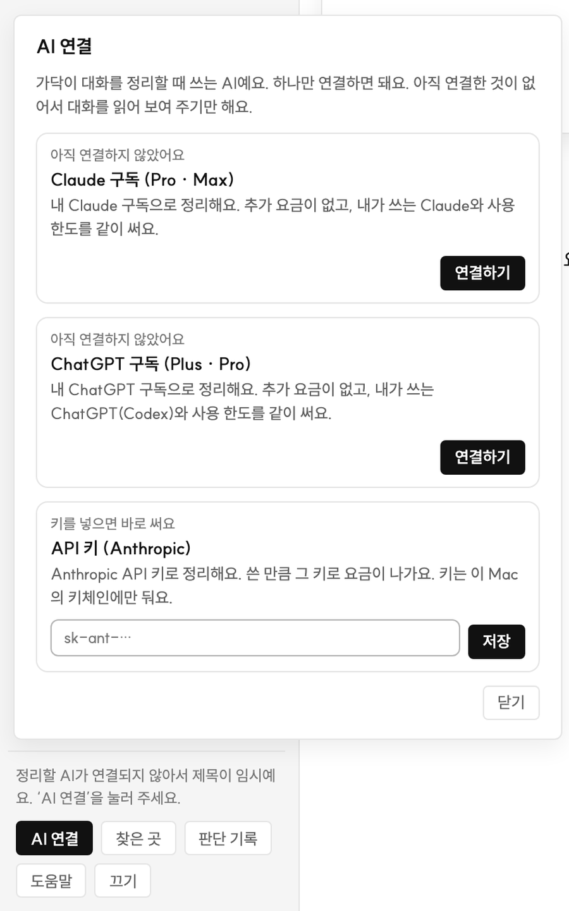
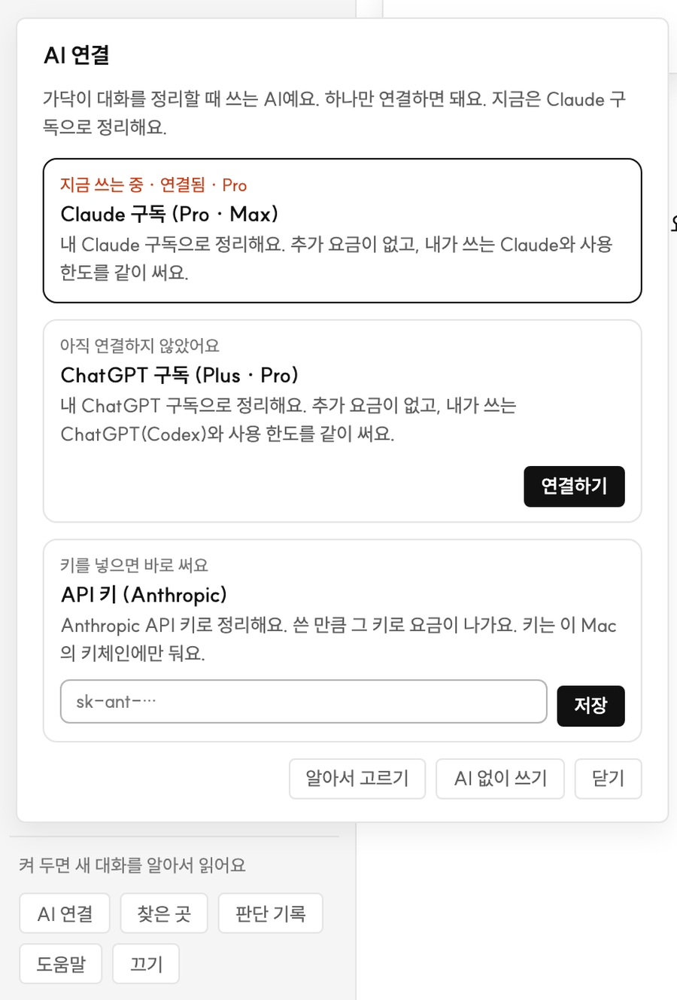
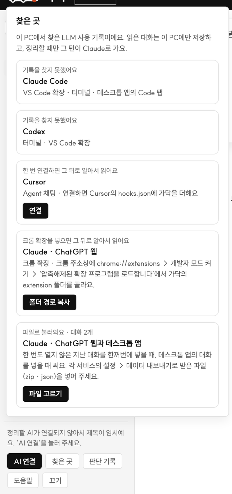
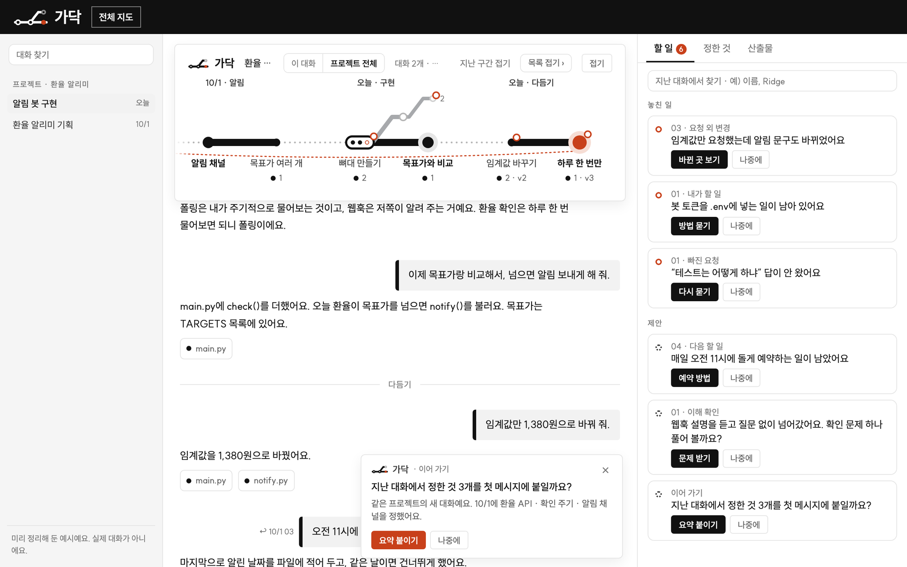
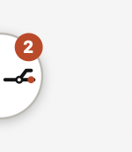
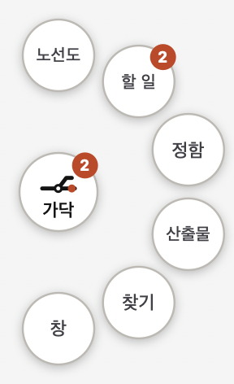
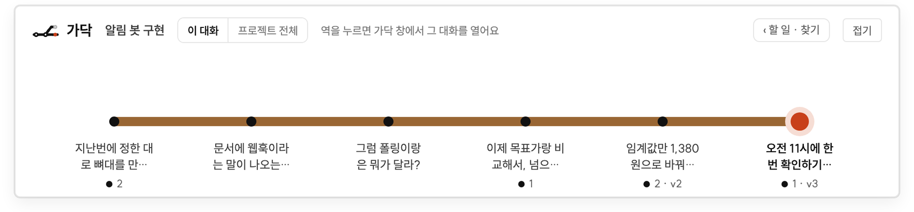
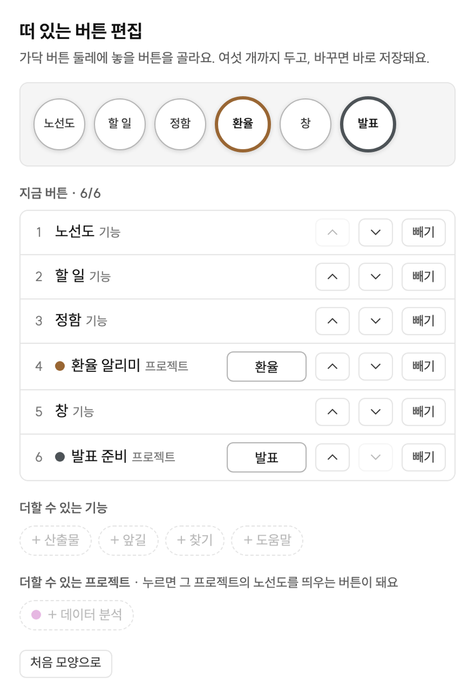
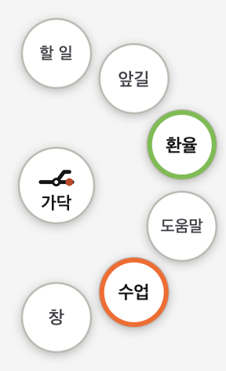

Mac에 넣고 처음 켜기까지. 터미널은 열지 않아요.
가닥은 Claude · ChatGPT 같은 AI와 나눈 긴 대화를 지하철 노선도로 정리해 주고, 놓친 일을 먼저 알려 주는 Mac 앱이에요. 대화는 쓰던 곳에서 그대로 하고, 가닥은 옆에서 흐름만 정리해요.
| Mac | Apple 칩(M1 이후)이 든 Mac, macOS 12 이상 |
|---|---|
| 받은 파일 | 가닥-0.1.0-arm64.dmg (전달받은 디스크 이미지 파일) |
| 정리할 AI (하나만) | Claude 구독(Pro · Max) · ChatGPT 구독(Plus · Pro) · Anthropic API 키 가운데 가진 것 하나. 없어도 가닥은 켜져요. 그때는 대화를 읽어 보여 주기만 하고, 노선도의 역 이름이 질문 첫머리 그대로예요. |
가닥은 학교 과제로 만든 앱이라 Apple의 유료 개발자 서명이 없어요. 그래서 처음 한 번만 직접 허용해 줘야 해요.
Apple은 ‘가닥’에 Mac을 손상시키거나 개인정보를 침해할 수 있는 악성 코드가 없음을 확인할 수 없습니다.
휴지통으로 이동완료가닥이 대화를 정리할 때 쓸 AI를 연결해요. 가닥이 켜지면 AI 연결 창이 저절로 떠요. 셋 가운데 가진 것 하나만 하면 돼요.

| 가진 것 | 할 일 |
|---|---|
| Claude 구독 Pro · Max | ‘Claude 구독’ 칸의 연결하기를 눌러요. |
| ChatGPT 구독 Plus · Pro | ‘ChatGPT 구독’ 칸의 연결하기를 눌러요. |
| API 키 Anthropic | 키(sk-ant-…)를 칸에 붙여 넣고 저장을 눌러요. |

가닥은 이 Mac에서 한 AI 대화를 찾아 읽어요. 어디에서 쓰느냐에 따라 할 일이 달라요. 지금 무엇을 읽고 있는지는 왼쪽 아래 찾은 곳에 나와요.
| AI를 쓰는 곳 | 할 일 |
|---|---|
| Claude Code · Codex | 없어요. 켜면 알아서 읽고, 하는 중인 대화도 따라와요. |
| Cursor | 찾은 곳 → 연결을 한 번 눌러요. 그 뒤의 대화부터 읽어요. |
| Claude · ChatGPT 웹 (크롬) | 크롬에 가닥 확장을 한 번 넣어요. 아래 순서대로요. |
| 지난 대화 한꺼번에 | 각 서비스의 설정 → 데이터 내보내기로 받은 파일을 찾은 곳 → 파일 고르기로 넣어요. |


1 2 3 4 5 6| 큰 점 · 굵은 이름 | 그 자리에서 무언가를 정했어요. 정한 내용은 ‘정한 것’ 칸에 모여요. |
|---|---|
| 빨간 점 | 대화가 지금 와 있는 자리예요. |
| 위로 빠지는 회색 선 | 곁길. 하던 이야기에서 잠깐 벗어난 질문이에요. |
| 길쭉한 역 | 한 번에 여러 가지를 부탁한 자리. 속이 빈 점은 답을 못 받은 부탁이에요. |
나머지 표시와 낱말은 가닥 창의 도움말 → ‘노선도 읽기’ · ‘낱말 풀이’에 있어요.
가닥을 켜면 화면 가장자리에 가닥 버튼이 반쯤 걸쳐 있어요. 다른 앱을 쓰는 동안에도 보여서, 가닥 창으로 가지 않고 노선도를 볼 수 있어요.


| 가닥 (가운데) | 노선도 창을 켜고 꺼요. 끌면 다른 가장자리로 옮겨져요. |
|---|---|
| 노선도 | 지금 쓰는 대화의 노선도를 화면 위쪽에 띄워요. |
| 할 일 · 정함 · 산출물 | 그 칸을 연 목록 창을 따로 띄워요. |
| 찾기 · 창 | 가닥 창을 열어요. |
| 빨간 수 | 지금 대화에 열려 있는 할 일 수예요. |
떠 있는 창은 Esc로 닫아요. 버튼을 숨기려면 메뉴 보기 → 떠 있는 버튼.

가닥 버튼을 오른쪽 클릭 → 버튼 편집을 누르면 작은 창이 떠요. 바꾸면 바로 저장되고, 몇 초 안에 버튼에 반영돼요.
| 빼기 | 안 쓰는 버튼의 빼기를 눌러요. |
|---|---|
| 더하기 | 아래의 + 앞길 · + 도움말처럼 점선으로 된 것을 눌러요. 여섯 개까지 둬요. |
| 차례 바꾸기 | ↑ ↓로 옮겨요. |
| 프로젝트 버튼 | + 프로젝트 이름을 누르면 그 프로젝트의 버튼이 생겨요. 누르면 가닥 창을 열지 않고 그 프로젝트의 노선도가 떠요. 버튼에 쓸 이름은 네 글자까지 고쳐요. |
| 처음 모양으로 | 여섯 개(노선도 · 할 일 · 정함 · 산출물 · 찾기 · 창)로 되돌려요. |


| 무엇 | 어디서 | 처음 값 |
|---|---|---|
| 정리에 쓸 AI | 왼쪽 아래 AI 연결 | 연결된 것 가운데 가닥이 알아서 |
| 대화를 읽는 곳 | 왼쪽 아래 찾은 곳 (Cursor 연결 · 크롬 확장 · 파일 넣기) | Claude Code · Codex는 알아서 |
| 가닥이 알아서 보내기 | 오른쪽 ‘할 일’ 칸 아래. 요청 외 변경 되돌리기 · 이어 가기 요약 두 가지 | 꺼짐 |
| 앞길 저절로 살피기 | 오른쪽 ‘할 일’ 칸 아래. 켜면 AI 사용 한도를 더 써요 | 꺼짐 (‘앞길 보기’를 누를 때만) |
| 떠 있는 버튼의 자리 | 가닥 버튼을 끌어서 옮겨요 | 왼쪽 가장자리 |
| 떠 있는 버튼의 구성 | 가닥 버튼 오른쪽 클릭 → 버튼 편집 | 여섯 개 |
| 떠 있는 버튼 숨기기 | 메뉴 보기 → 떠 있는 버튼 | 보임 |
| 목록에서 대화 빼기 | 대화에 마우스를 올리고 ×. 목록 맨 아래에서 되돌려요 | — |
| 밝은 · 어두운 화면 | Mac의 시스템 설정을 따라가요 | — |
| 처음에 안 열려요 | 2번의 ‘그래도 열기’를 했는지 봐요. 가닥이 응용 프로그램 폴더에 있어야 해요. |
|---|---|
| 역 이름이 질문 첫머리 그대로예요 | AI가 연결되지 않았어요. 왼쪽 아래 AI 연결에서 하나를 연결해요. |
| ‘연결하기’가 끝나지 않아요 | 브라우저에서 로그인을 마쳤는지 봐요. 5분이 지나면 저절로 멈춰요. 다시 누르면 돼요. |
| 빨간 글씨로 멈췄다고 나와요 | AI 사용 한도에 걸렸거나 로그인이 풀렸어요. 한도가 풀린 뒤 정리 다시를 눌러요. |
| 대화가 하나도 안 보여요 | 찾은 곳을 봐요. 이 Mac에서 AI를 쓴 적이 없으면 읽을 기록이 없어요. |
| 떠 있는 버튼이 안 보여요 | 메뉴 보기 → 떠 있는 버튼에 표시가 있는지 보고, 화면의 네 가장자리를 둘러봐요. |